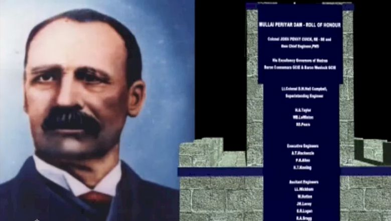

The Mullaperiyar Dam
Construction

In May 1887, construction of the dam began. As per "The Military Engineer in India" Vol II by Sandes (1935), the dam was constructed from lime stone and "surkhi" (burnt brick powder and a mixture of sugar and calcium oxide ) at a cost of ₹ 104 lakhs, was 173 feet high and 1241 feet in length along the top and enclosed more than 15 thousand million cubic feet of water. Another source states that the dam was constructed of concrete and gives a figure of 152 feet height of the full water level of the reservoir, with impounding capacity of 10.56 thousand million cubic feet along-with a total estimated cost of ₹ 84.71 lak.
The construction involved the use of troops from the 1st and 4th battalions of the Madras Pioneers as well as Portuguese carpenters from Cochin who were employed in the construction of the coffer-dams and other structures. The greatest challenge was the diversion of the river so that lower portions of the great dam could be built. The temporary embankments and coffer-dams used to restrain the river waters were regularly swept away by floods and rains. Due to the coffer dam failures, the British stopped funding the project. Officer Pennycuick raised funds by selling his wife's jewelry to continue the work. In Madurai, Major Pennycuick's statue has been installed at the state PWD office and his photographs are found adorning walls in peoples homes and shops. In 2002, his great grandson was honoured in Madurai, a function that was attended by thousands of people.
The dam created a reservoir in a remote gorge of the Periyar river situated 3,000 feet above the sea in dense and malarial jungle, and from the northerly arm of this manmade waterbody, the water flowed first through a deep cutting for about a mile and then through a tunnel, 5704 feet in length and later through another cutting on the other side of the watershed and into a natural ravine and so onto the Vaigai River which has been partly built up for a length of 86 miles, finally discharging 2000 cusecs of water for the arid rain shadow regions of present-day Theni, Madurai District, Sivaganga District and Ramanathapuram districts of Tamil Nadu, then under British rule as part of Madras Province (Sandes, 1935).
The Periyar project, as it was then known, was widely considered well into the 20th Century as "one of the most extraordinary feats of engineering ever performed by man". A large amount of manual labour was involved and worker mortality from malaria was high. It was claimed that had it not been for "the medicinal effects of the native spirit called arrack, the dam might never have been finished". 483 people died of diseases during the construction of this dam and were buried on-site in a cemetery just north of the dam.
In 2012, it was announced that a memorial dedicated to dam engineer Pennycuick would be erected at the dam site.